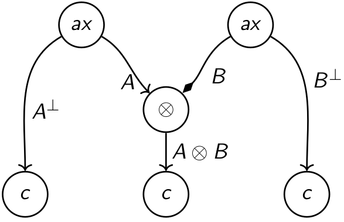
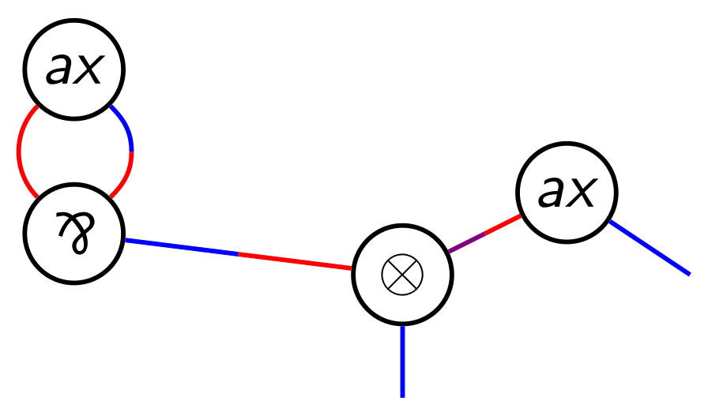
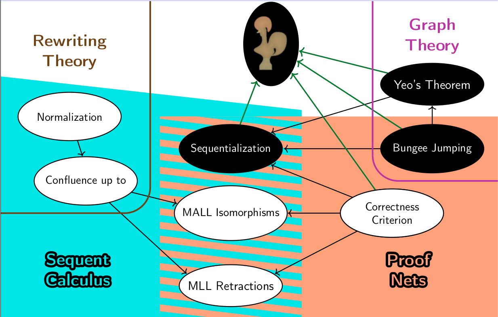
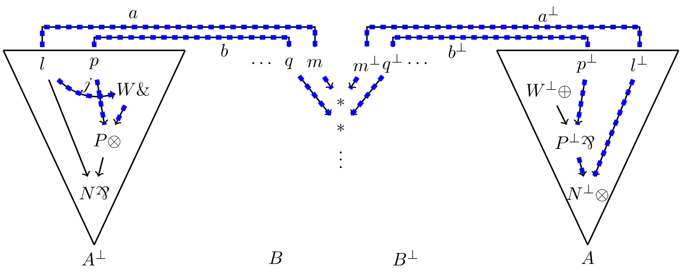
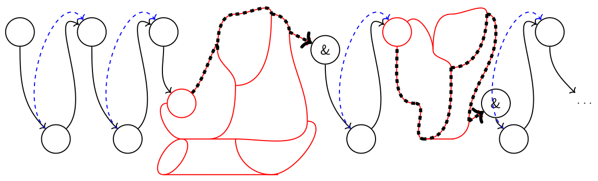

With Olivier Laurent at LMCS (after invitation, extended version of the FSCD 2023 article with the same name)
[
Abstract
We characterize type isomorphisms in the multiplicative-additive fragment of linear logic (MALL), and thus in *-autonomous categories with finite products, extending a result for the multiplicative fragment by Balat and Di Cosmo. This yields a much richer equational theory involving distributivity and cancellation laws. The unit-free case is obtained by relying on the proof-net syntax introduced by Hughes and Van Glabbeek. We use the sequent calculus to extend our results to full MALL, including all units, thanks to a study of cut-elimination and rule commutations.
With Olivier Laurent at TLLA 2025
[
Abstract
We present an implementation of proof-nets for unit-free multiplicative linear logic in the proof assistant Rocq. It contains a definition of proof-structures and proof-nets, a proof of the sequentialization theorem as well as a definition of cut-elimination.

With Olivier Laurent, Lorenzo Tortora de Falco and Lionel Vaux Auclair at FSCD 2025
[
Abstract
We revisit sequentialization proofs associated with the Danos-Regnier correctness criterion in the theory of proof nets of linear logic. Our approach relies on a generalization of Yeo's theorem for graphs, based on colorings of half-edges. This happens to be the appropriate level of abstraction to extract sequentiality information from a proof net without modifying its graph structure. We thus obtain different ways of recovering a sequent calculus derivation from a proof net inductively, by relying on a splitting par-vertex, on a splitting tensor-vertex, on a splitting terminal vertex, etc.
The proof of our Yeo-style theorem relies on a key lemma that we call cusp minimization. Given a coloring of half-edges, a cusp in a path is a vertex whose adjacent half-edges in the path have the same color. And, given a cycle with at least one cusp and subject to suitable hypotheses, cusp minimization constructs a cycle with strictly less cusps. In the absence of cusp-free cycles, cusp minimization is then enough to ensure the existence of a splitting vertex, i.e. a vertex that is a cusp of any cycle it belongs to. Our theorem subsumes several graph-theoretical results, including some known to be equivalent to Yeo's theorem. The novelty is that they can be derived in a straightforward way, just by defining a dedicated coloring, again without any modification of the underlying graph structure (vertices and edges) - similar results from the literature required more involved encodings.

Supervised by Olivier Laurent at Ecole Normale Supérieure de Lyon
Defended on Sepember 23, 2024 in Salle des Thèses and online on BBB
(The Manuscript has less typographical mistakes than what is available on HAL or Theses.fr.)
[

With Olivier Laurent, Lorenzo Tortora de Falco and Lionel Vaux Auclair at TLLA 2023
[
Abstract
We propose a new proof of sequentialization for the proof nets of unit-free multiplicative linear logic with mix. It is based on the search of a splitting par by means of a simple new lemma about proof structures: the bungee jumping lemma.

With Olivier Laurent at FSCD 2023 (see HAL for the full version with proofs)
Superseded by its journal version
[
Abstract
We characterize type isomorphisms in the multiplicative-additive fragment of linear logic (MALL), and thus for *-autonomous categories with finite products, extending a result for the multiplicative fragment by Balat and Di Cosmo. This yields a much richer equational theory involving distributivity and annihilation laws. The unit-free case is given by relying on the proof-net syntax introduced by Hughes and Van Glabbeek. We then use the sequent calculus to extend our results to full MALL (including all units).

With Olivier Laurent at Linearity - TLLA 2022
[
Abstract
We propose a new proof of sequentialization for the proof nets of unit-free multiplicative-additive linear logic of Hughes & Van Glabbeek. This is done by adapting a method from unit-free multiplicative linear logic, showing the robustness of this approach.
